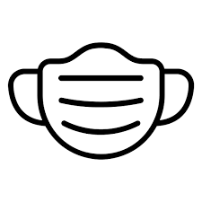

My College Experience
I started as a Running Start Student, who wanted to go into Computer Science.
I took a java course at my community college,
and then random other courses to finish my Associate degree in Science.
I transferred to Western for the Fall of 2020, the first full year of COVID school.
My experience taking 3 CS classes online was extremely unpleasant for me.
I had decided that CS was not for me.
Fall 2021 was a hybrid learning environment and I was not sure if i should continue.

What did I end up doing after my CS dreams were crushed